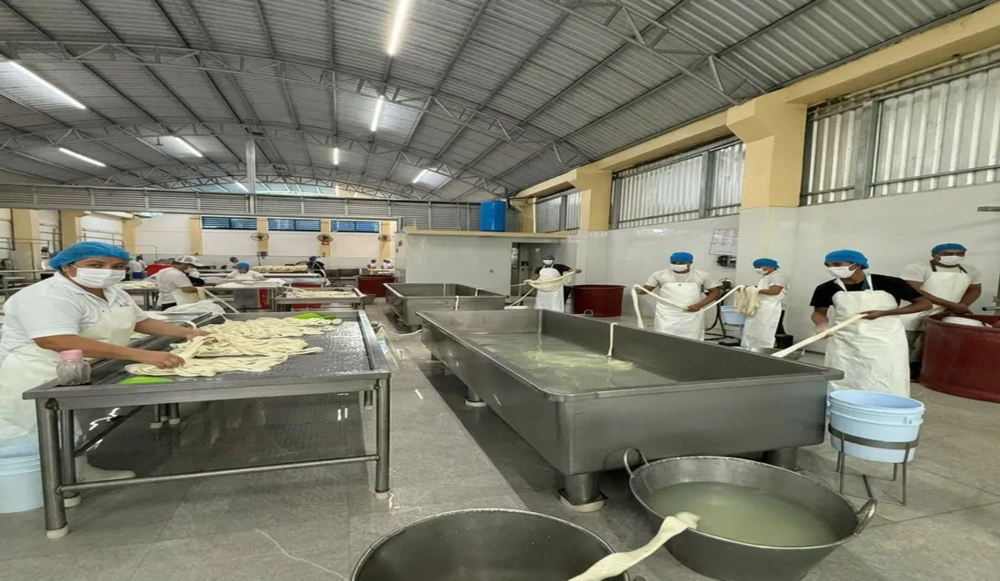
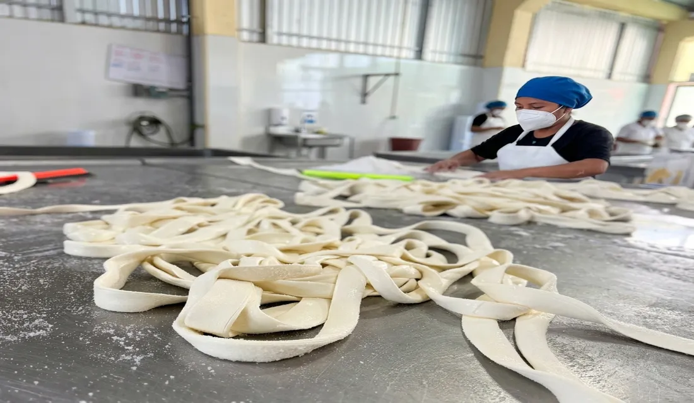

33 años elaborando tradición oaxaqueña
La historia de Lácteo Industria Soto comenzó en 1993 con un joven quesero de 24 años y el sueño de honrar las recetas de su tierra. Hoy, somos el proveedor mayorista de confianza para cremerías y abarrotes en Chiapas y Oaxaca.
"Orgullo que se produce, calidad que trasciende."
Nuestros orígenes
En 1993, a los 24 años, Martín Soto Bautista fundó en Santa María del Tule, Oaxaca, un pequeño obrador de quesos al que llamó Productos Lácteos Hermano Soto. Lo hizo con un propósito claro: producir quesillo, queso de tela y requesón con las recetas tradicionales que había aprendido, y entregarlos a las cremerías del Valle Central con la consistencia y calidad que sus clientes merecían.
Lo que empezó como una operación artesanal familiar fue creciendo año con año gracias al boca a boca entre cremerías y abarroterías de la región. El sabor auténtico y la confiabilidad se convirtieron en nuestra firma.

Evolución a Lácteo Industria Soto
Con los años, la demanda superó la capacidad del obrador original. La empresa se formalizó como Lácteo Industria Soto S.A. de C.V. y estableció su planta de producción en Arriaga, Chiapas, desde donde hoy abastecemos a clientes en dos estados. El traslado nos permitió escalar sin renunciar a lo que nos hace únicos: seguimos elaborando cada producto con los mismos métodos artesanales que Martín aprendió en Oaxaca hace más de tres décadas.

Una empresa familiar con certificado sanitario
Somos una empresa mexicana, familiar y 100% enfocada al mayoreo. Nuestros clientes son cremerías, tiendas de abarrotes y distribuidores que necesitan producto consistente, certificado y entregado en cadena de frío. No vendemos al consumidor final: nuestro compromiso es con quien abastece al consumidor final todos los días.
Contamos con certificado sanitario que respalda nuestros procesos productivos. Cada pieza que sale de nuestra planta es resultado de 33 años de aprendizaje y del mismo respeto por la tradición oaxaqueña con el que empezamos.
Lo que nos define
Tres principios que han guiado a Lácteo Industria Soto desde 1993.
Tradición
Elaboramos cada producto con las recetas heredadas de Santa María del Tule. El tiempo no ha cambiado nuestros métodos, solo los ha perfeccionado.
Calidad
Procesos certificados, materia prima seleccionada y cadena de frío en toda nuestra logística. La consistencia no se negocia.
Cercanía
Trato directo con cada cliente mayorista. Entendemos las necesidades de cremerías y abarrotes porque llevamos décadas trabajando con ellas.
Trabaja con un proveedor con 33 años de historia
Únete a las cremerías y abarroterías de Chiapas y Oaxaca que confían en Lácteo Industria Soto para abastecer a sus clientes todos los días.